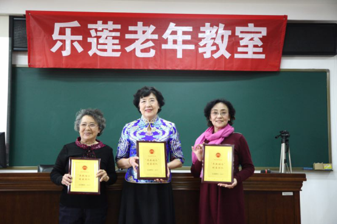

2017“养教结合”实践分享会在京召开：让“养教结合”落地深根
2017-04-01 14:06:35 来源: 综合 作者:
3月31日，北京朝阳区左家庄街道与乐莲教育联合举办的2017“养教结合”实践分享会在朝阳区委党校召开。
据悉，此次分享会旨在引导老年人通过乐莲老年教室平台，积极开展形式多样、内容丰富的教学活动，充分发挥平台优势，互助互学，快乐体验，不断充实老年人的精神文化生活，用实际行动响应《老年教育发展规划(2016-2020年)》和《“十三五”国家老龄事业发展和养老体系建设规划》的号召，将“养教结合”落到实处。

左家庄街道副主任贾宁女士，乐莲教育董事长王宁女士出席了会议并致辞。来自左家庄街道办事处、左家庄街道老年大学、文化部离退休人员服务中心及高校、部委、社区、企事业单位等社会各界的代表共80余人参与了此次活动并踊跃发言。
如何更好践行“养教结合”,左家庄街道副主任贾宁阐述了自己的看法：此次活动是老人养老与文化教育有机结合的展示，“希望乐莲老年教育能在实践中充分达成引领式结合，问需型结合、协作式结合的作用，突出传递“养教结合”的新观念、新导向、新氛围。
“大胆地说出你们的需求，让我们去帮忙实现，去填充;大胆地展示你们特有的风采，让我们去领略、感受、传承;大胆地迈向更广阔的舞台，让我们一同走向更好的明天。”贾宁在现场如此勉励老人。
退休教授王志方先生讲述了自己对摄影的追求。“我觉得退休以后是我人生的最精彩的时候。一个人不在活多久，在于如何活的精彩。”王志方告诉记者，他不仅自己执着于摄影，还经常在网上和朋友一起交流拍摄心得。在他的影响下，有一位老同学也开始学习摄影，并因此学会了使用手机、微信。中学退休教师张璐女士向此次活动赠送了自己创作的国画《花开富贵》，并分享了自己退休后学习书法和绘画的心路历程。
在离退休还有一年的时候，来自左家庄街道的活力老人代表徐敏女士就开始筹划自己的退休生活。在现场，她唱起了昆曲《贵妃醉酒》，“退休虽然是职业生涯的结束，却开启了我人生旅途更加华彩的篇章。”国资委轻工离退休干部局舞蹈队在活动现场奉献精彩的舞蹈表演。队长姜琳女士坦言：“我们唱歌跳舞不只让自己的晚年生活更精彩，还能够贡献自己微博的力量，感染周围的朋友，这也是我们义不容辞的责任。”
清华大学退休体育教授陈蒂侨带领她的“俱乐部”在分享会现场展示了健身球操，感染了在场的观众。随后，海淀区老干部局长青合唱团带来女声小合唱表演，将活动现场氛围推向了高潮。
记者获悉，为了让老年人更加便利地参与分享和交流，促进“养教结合“的落地实践，乐莲老年教室线上平台在今天的活动中正式启动。来自朝阳区左家庄街道曙光里社区的王缉志老人作为平台第一批用户的代表，为到场的老年人详细讲解了这一新工具的使用方法，还借此分享了自己的学习心得和生活体会。活动主办方还向参与分享的老人和老年团队颁发了“养教结合”先锋人物证书和“养教结合”明星团队奖牌。
“养老并不等于被动接受照顾，老年人可以通过发掘兴趣爱好，广泛结交朋友，积极分享交流，让生活充实而快乐，享受更加精彩的退休生活，提高生命和生活质量，展现老年人积极向上的精神面貌。”与会活力老人代表为此呼吁，社会各界应积极探索创新，为快乐养老提供更好的教育服务支持，让老年人能够更加方便地分享丰富的人生经历，充分发挥自己的能力，创造新的价值。